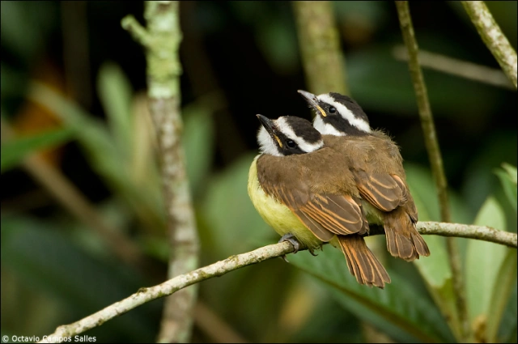

A Reprodução do Bem-te-vi
Constrói o ninho com pequenas ramas de vegetais em galhos de árvores geralmente bem cerradas. Pode, inclusive,
utilizar, para construir o seu ninho, sobretudo em zonas urbanas, material de origem humana: papel, plástico e
fios. Seu ninho tem uma forma fechada e esférica, com a entrada na parte lateral (diferentemente dos ninhos em
forma de xícara, a entrada é pelo lado), medindo cerca de 25 centímetros de diâmetro. Geralmente, é construído
no topo de árvores altas, na forquilha de um galho, mas é muito comum também vê-lo nas cavidades dos geradores
de postes, podendo ficar entre 3 e 12 metros do solo.
Além de construir o ninho o casal divide as tarefas de cuidar da prole. Na época do acasalamento, próximo ao ninho,
macho e fêmea cantam em dueto, batendo as asas ritmicamente.
Põe cerca de três a quatro ovos cônicos e brancos com pintinhas pretas (lembrando ovos de codorna). Eles
são brancos logo após a postura, mas após um tempo passam a ficar amarelados. Os ovos medem 31 x 21
milímetros e são incubados pelo casal. São cônicos com pintinhas pretas como os ovos de codorna, após a eclosão
seu desenvolvimento é altricial (nasce quase sem penas com olhos fechados, não voa nem anda):
Época de reprodução: setembro a dezembro. Número de ovos: 2 a 4 ovos. Incubação:17 dias.
São aves monogâmicas e quando da nidificação o território circundante ao ninho é defendido vigorosamente, podendo vir a ser agressivo com outros pássaros e até mesmo outros animais ao se sentir ameaçado. Por esta razão que faz parte da família dos tiranídeos (de tirano). É comum vê-los dando rasantes em aves de rapina (principalmente gaviões) que entram no seu território.
